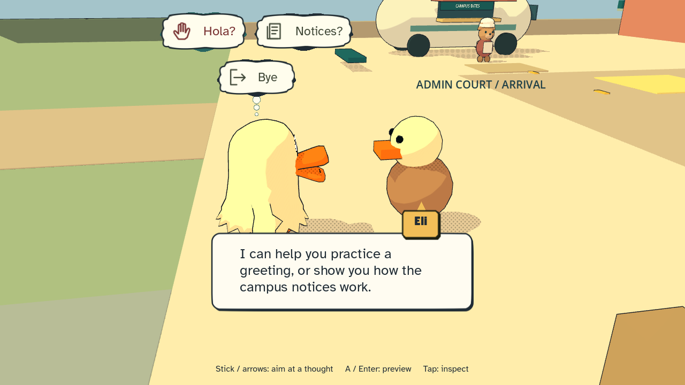

Mr. Duck Goes
to College
A comic-book city. A day of your own.
Walk or skate from the apartments through downtown and up the greenway to campus. Learn a greeting from Eli, help Nora get her saved seeds to the college, and hear what the neighbors think of the potholes. Visit people on their schedules, notice what needs fixing, and decide when to head home for sleep.
Play the beta →Testing it for us? Use the playtest checklist and questions (about 10 minutes after you play).
No installation or account needed. Desktop browser recommended. Allow a moment for the first load.

Get moving
- Move
- WASD / arrows · left stick
- Look
- Right mouse drag / IJKL · right stick
- Jump
- Space · A
- Ask / inspect
- E · X
- Board
- Q / Alt · View / Select
- Push faster
- B · B
- Pockets
- Tab
- Pause
- Escape / P · Start
- Debug info
- F3
Click inside the game to focus it and enable sound. If using a controller, press a button after connecting it. On an iPad, a keyboard or a controller works; there are no on-screen touch controls yet.
A few things to try
Say a little; hear a response. Conversation choices now pair a short intention with a symbol. Inspect one for its full meaning and real cost, then confirm. NPCs answer the topic you chose, react to completed favors and keep optional advice behind a question. Shopkeepers finish their reply before opening the counter menu.
New comic UI: pockets now have an item grid and facing action page. Select an item, inspect its effect, then preview its cost before using it. Close stays visible. Story dialogue waits for you: Enter / A / E reveals, then a separate press continues; hold Esc / B to skip a scene. Pause opens a short notebook with rest, calendar and settings.
Fall days and scheduled nights. Duck gets drowsy as the night goes on. His thoughts tell you how he feels; his bed lets you choose actual sleep hours and preview the next morning. Coffee and energy drinks buy time with a rebound afterward. Find Rest & energy in Pause, or use a carried drink through pockets.
People now keep work, home and sleep schedules. Bea and Tavi stay out for the Friday 10–11:30 PM terrace sketch circle during Fall and Spring. The neighborhood has three new house blockouts and a warm place to gather. Final sleep faces and later event activities are still being made.
Open Pause for today's lead: Eli is in the campus admin court, Nora is on the downtown Common Ground plaza. Choices float as thought clouds; each one shows its time cost before anything happens. There is no deadline.
Talk to the neighbors on the sidewalks. Most have a complaint about the city before their tip. Rosa waits at the downtown bus stop and speaks Spanish; try her before and after Eli's greeting. Nora keeps seed-favor hours, 9:00 to 18:00; if you miss her, the favor waits for another day, and she remembers when you have helped before. Skating, jumps and tricks still use simple placeholder poses.
Mr. Duck has new eyes: big, hand-drawn and a bit googly. He rides goofy now, standing on his board instead of through it, kicks to push, and his eyes react to each trick, bail and landing.
Two first dungeon slices are in. On campus, the Forge's front door opens on ENGR 101: register at the desk, predict a cart's stop at the demo lane, then ride the stopping bay and brake at the right mark to land in the gold bay. At home, Room 2 is your roommate's overgrown garden: listen to the flowers, plant and mist three seeds, and find the AC button before their hair burns any longer. Progress in these rooms lasts for the visit, not the save, for now.
Shadows are drawn as comic-book halftone dots, now gentler: the ground carries a fine dot screen, walls keep a soft shadow, and dim light inside the dungeons no longer fills the floor with dots.
Playing on an iPad or another device with a keyboard or controller? Keys now keep working after you tap the screen or switch apps. The pause menu has a new “Check keyboard / controller” screen that shows every key and button the game receives. Music changes are smoother too: songs crossfade between areas, cutscenes and doors lower the music instead of cutting it, and the pause menu fades it out.
The dungeons now feel ancient. Step into the Forge or Room 2 and the camera opens beneath a watching stone face before the hall’s name rises out of the dark. Inside it is fog, fire light and old stone, and when a sealed gate gives way the camera turns to watch it sink into the floor.
A new beginning: a new game opens in Mr. Duck’s bare little room with a phone call from his mother. He never speaks; his thoughts drift up in a dark cloud. Trash with a flower that will not stop burning blocks the stairs, so the way out runs through his roommate’s overgrown room, a kettle with a few last drops, and a borrowed board. Already have a save? Choose “Start a new test day” on the title screen to see it.
Conversations read more naturally now. Eli reacts once you learn the greeting, the seed handoff opens straight on the seeds, and every choice card asks plainly (“Practice a Spanish greeting?”) with Yes or Not now. Exits say where you are, and if something isn’t ready yet, the prompt tells you who can help before you press E.
Some doors now open. Look for a gold mat: the administration offices on campus, the four downtown shops, the Pixel Parlor arcade (its cabinets are just for looking, for now) and two courtyard houses. Step inside with E; walk back out the door to leave. The art is still placeholder, but service staff and neighbors now appear at their scheduled hours.
The Common Ground vent wheezes. Borrow a fan at the campus equipment desk, learn to aim it at the airflow bench, then turn it to fit the plaza vent and run it on low or boost. Or ask the neighbors to help; Nora will thank you for whichever you did.
Sprint or push hard and a stamina wheel appears beside Mr. Duck. It drains as you go and fades once it refills; the gold dots under it are your fitness level. The screen otherwise stays clear: the clock and a prompt when there is something to do. Your lasting lead stays in the pause notebook. Press F3 (or use Pause) for the old debug readouts.
Menus: A selects, B goes back, and left/right adjusts sliders. Your discoveries and settings save in this browser; private browsing or clearing site data may reset them.
Tell us what you notice
Something confusing, broken, or fun? Include your browser, controls, what you tried, and what happened.
Playtest checklist and questions · Report a playtest finding on GitHub · Download a feedback template